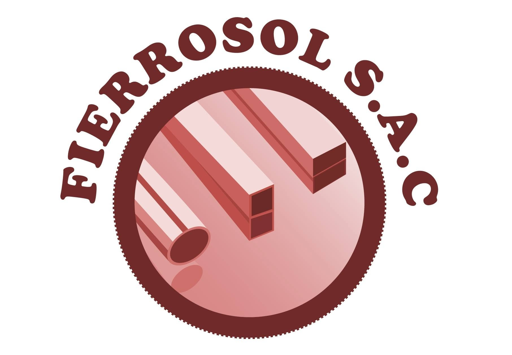
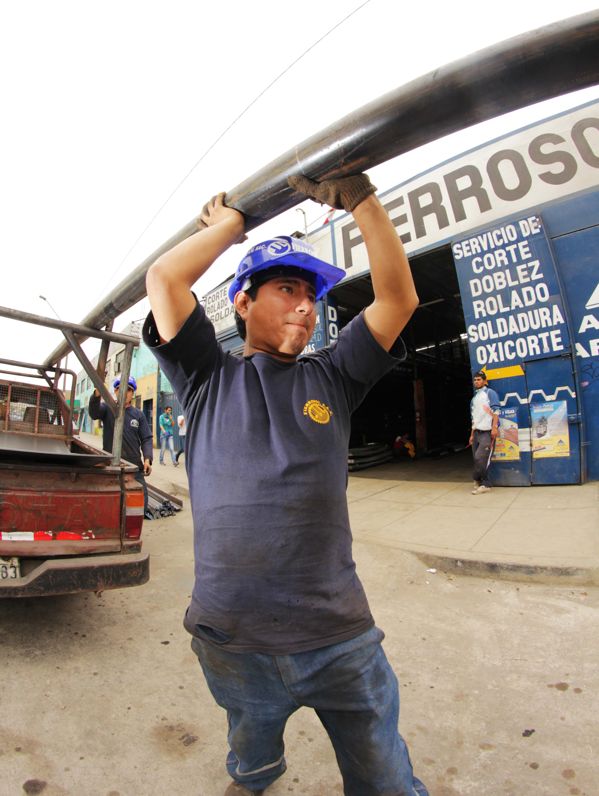
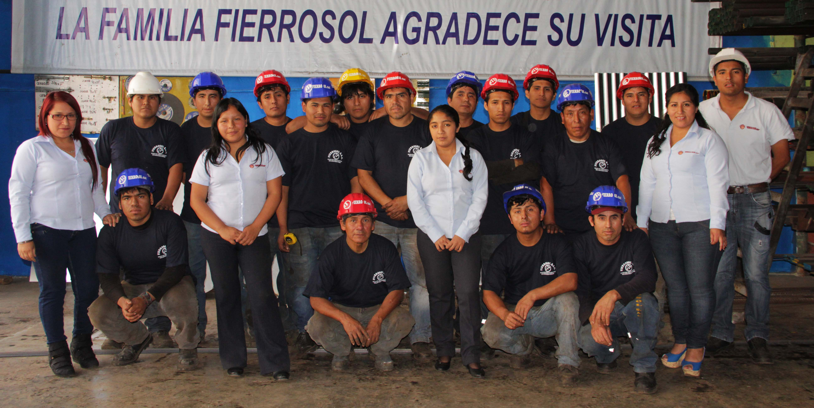
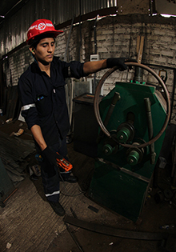
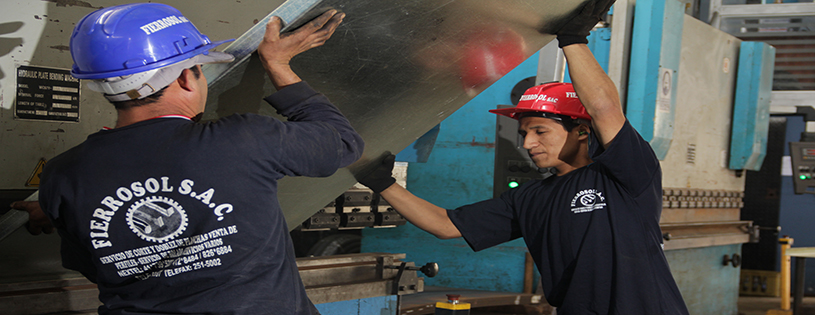
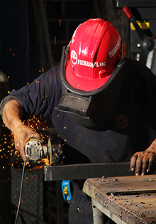
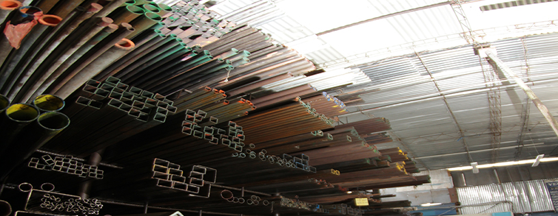

Metalmecánica desde 2011 — Chorrillos, Lima
Fabricación, montaje y mantenimiento de estructuras metálicas, junto con la distribución de planchas, perfiles, barras y tubos de acero para construcción e industria.

Fierrosol S.A.C. es una empresa con amplia experiencia en metalmecánica, dedicada a la elaboración, evaluación, ejecución, mantenimiento y operación de proyectos de ingeniería mecánica: fabricación, montaje y desmontaje de estructuras metálicas y carpintería metálica en general.
Nuestro soporte radica en la sólida formación y experiencia profesional de los ingenieros, supervisores y técnicos que ejecutan las obras con eficiencia, rapidez y solvencia técnica frente a los requerimientos de nuestros clientes.
"La compañía empezó con un establecimiento muy pequeño, para luego, gracias al esfuerzo y dedicación de todos nuestros empleados, ir creciendo hasta llegar al lugar donde estamos. Aún nos falta crecer mucho más, pero con empuje y dedicación, seguiremos haciéndolo." Roberto Angulo — Gerente General
Ser la primera empresa en nuestro rubro, brindando soluciones a las necesidades de nuestros clientes, trabajando en equipo con la rapidez y eficiencia que exigen los proyectos actuales, certificando la calidad de cada producto que distribuimos según las normas dispuestas.
Fomentamos una cultura de prevención de riesgos y un sistema de gestión que cuida la seguridad, la salud ocupacional y el medio ambiente en cada proceso.


Un servicio sólido y responsable como nuestro acero.


Corte y doblez de planchas de cobre, bronce, aluminio, galvanizadas, acero LAC, LAF e inoxidable, desde 0.5 mm hasta 12 mm de espesor. Fabricamos canales U-C, omegas, vigas, perfiles, canaletas, bandejas porta cable y estructuras metálicas en general.
Perforado de acero inoxidable, acero al carbono y aluminio, con diámetros desde 1.0 mm hasta 100.0 mm, en planchas de 0.5 mm hasta 19.0 mm de espesor.
Soldadura de partes y piezas metálicas a gran escala con personal calificado. Disponemos de soldadura TIG (piezas finas o inoxidables), MIG (mayor espesor) y arco manual (proceso económico con varilla eléctrica).
Rolado de cédulas 80, 40 y 30 hasta 4", platinas, ángulos, tees, tubos de acero, cobre y aluminio, para escaleras caracol, ejes y piezas curvas de distintas formas y tamaños.
Comercializamos materiales y consumibles para sus proyectos de construcción e industria.


Planchas y bobinas laminadas en frío y en caliente, calidad comercial, cilindro de gas y estructural.
Platinas, ángulos estructurales, ángulos de alta resistencia y tees.
Barras redondas y hexagonales calibradas.
ASTM A-615 grado 60, ASTM A-706 grado 60 soldables y acero dimensionado.
Alambrón liso y corrugado, alambrón de trefilería, alambre negro recocido, alambre galvanizado y mallas electrosoldadas.
Canales "U" estándar americano, vigas "I" o doble "T" y vigas "H" alas anchas (WF).
Tubos negros y galvanizados ISO 65, sin costura ASTM A-53/A-106/API 5L, y tubos mecánicos electrosoldados redondos y cuadrados.
Electrodos Oerlikon, balletas para puertas enrollables, rieles de corredera y perfiles estructurales conformados en frío.
Av. El Sol Nro. 1024 "D", Urb. La Campiña, Chorrillos — Lima, Perú
Telefax: 251-5002 | Teléfono: 662-6087
Nextel: 412*8484 · 826*6884 · 412*3230
Correo: contacto@fierrosol.com.pe
Lunes a viernes: 8:00 am – 6:00 pm
Sábados: 8:00 am – 12:00 pm
Escribir por WhatsApp